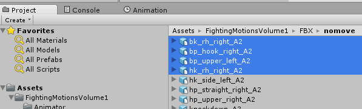
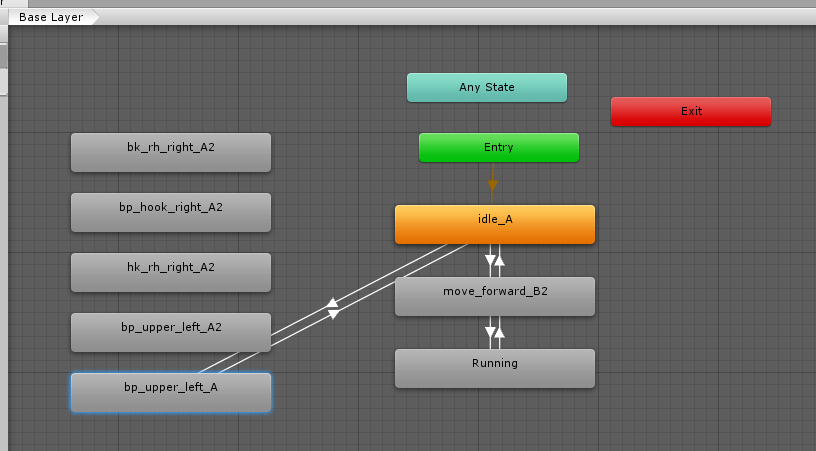
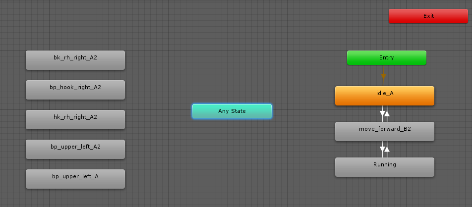
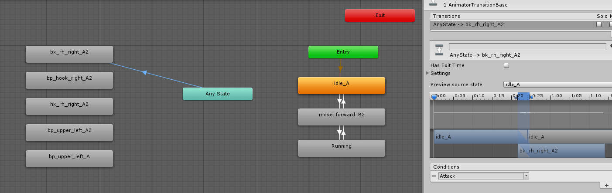
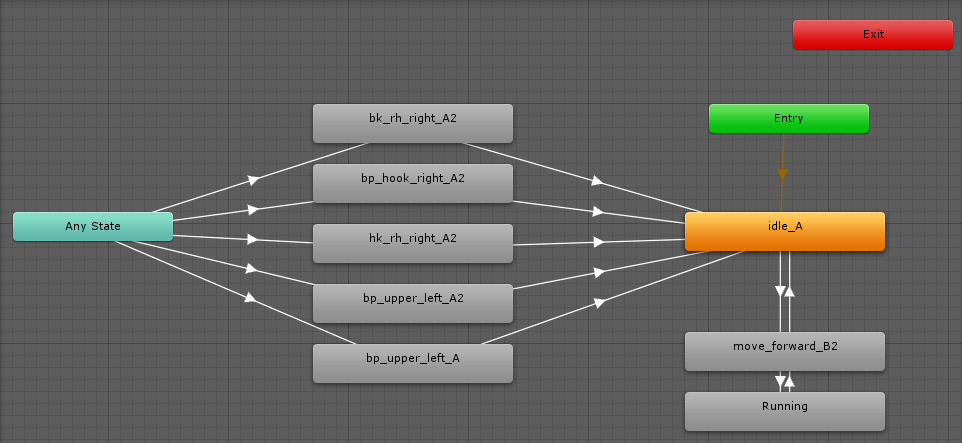
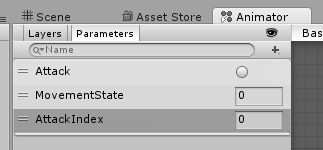
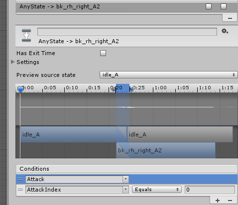

In our previous step, we created a walking and running animation sequence, and we added a punching animation, which transitions off of Idle.
For this next step, we are going to add multiple Attack animations, and allow them to be triggered at any time.
First off, let's add more Animation Clips to the Animator window. Under the FightingMotionsVolume1/FBX/nomove folder, drag the following animations to the Animator window:

Separate them out in the Animator window so they can be seen clearly, and move our old bp_upper_left_A to be with the new attack animations.

Before, we transitioned from Idle_A into bp_upper_left_A. However, that limited us to only triggering a punch during the idle state. Click on the Transition lines from Idle_A to bp_upper_left_A, and delete the Transition lines by pressing the Delete key.
Going forward, we want to be able to Transition our attack animations from any state. So rather than making transitions from every state, we are going to use the special "Any State" node. The Any State is an Animator shortcut that behaves like any other individual States, but acts like a wild card. As such, you cannot do a return transition to the Any State. Instead, we'll want to do a return Transition to our Idle_A. This implies that after we attack, we want to go back to our Idle state.
Re-Arrange your States so you have more room to allow connections between the Any State and attack animation States.

Make Transition lines from Any State to bk_rh_right_A2. For the Transition Condition, add the Attack Parameter as a condition. Since this is an Attack animation, and we want to be able to interrupt the current animation to fire off the attack, we also want to untick the Has Exit Time.

Proceed to make a Transition line from Any State, to each of the other attack States, setting the same Condition of Attack. For our return Transition, we want to go directly to the Idle_A state. Re-arrange the states so that it looks clearer, as we did below.

Play the Animation again. When you click on the Attack Parameter to fire off the event, you'll notice that it only fires the first condition that it meets. In the above example, that bk_rh_right_A2, since it was added first. The other attacks are ignored. So how can we get the other Attack animations to fire?
Stop the Animation, and add a new Int Parameter, and call it AttackIndex.

Much like we did for the MovementState, and decided that 0 was idle, 1 was for walking, and 2 was for running, we'll give each of our Attacks an index value. Our first attack animation will be AttackIndex 0, the second attack Animation will be 1, etc.
For each Transition line from Any State to the Attack States, add a new Condition on AttackIndex Equals with our numbering system. For example:
bk_rh_right_A2 will have AttackIndex Equals 0
bp_hook_right_A2 will have AttackIndex Equals 1
hk_rh_right_A2 will have AttackIndex Equals 2
etc

Once all the Transitions from Any State to Attack States have a unique AttackIndex, press the Play button again. The Butcher will idle.
In the Parameters section, change the AttackIndex to 2, and click on the Attack Trigger. The State will interrupt the Idle_A animation, transition from Any State to the appropriate Attack Animation, then back to Idle after completing. Since the Attack Trigger only fires once, the Butcher will continue to idle after his attack. Change the AttackIndex to different values, pressing the Attack Trigger after each one.
Created with the Personal Edition of HelpNDoc: Easily create Web Help sites